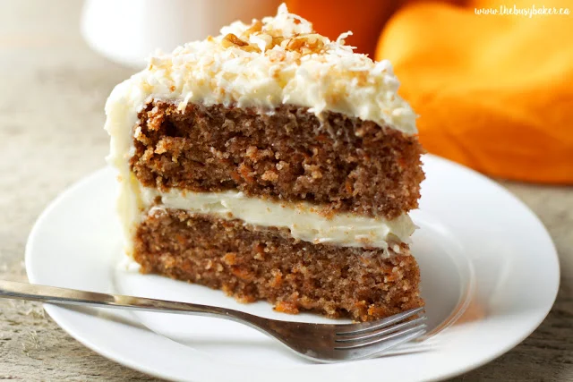

Almond Croissants
A delicate pastry filled with the sweet nutty goodness of almond paste, dusted with powdered sugar, and baked to a golden perfection
Ingredients
Pinterest, CC0
- 1 sheet of puff pastry
- 1/2 cup of almond paste
- 1/4 cup of powdered sugar
- 1 egg (for egg wash).
Instructions
- First, preheat the oven to 375F
- Next,roll out the puff pastry and cut it into triangles
- Spread a thin layer of almond paste on each triangle.
- Then, roll each triangle from the base to the tip
- curve into a crescent shape
- Finally, brush with egg wash and sprinkle with powdered sugar
- Bake for 15-20 minutes until it's golden brown
Sourdough Bread

A community favorite, boasting a crusty exterior and a soft, airy interior, embodying the classic sourdough charm
Ingredients
- 1 cup sourdough starter
- 1 1/2 cups warm water, 4 cups bread flour
- 1 1/2 teaspoons salt
Allrecipes, CC0
Instructions
- First, mix the starter, water, and 3 cups of flour in a large bowl. This should create a sticky dough
- Next, add salt, and remaining flour 1 tablespoon at a time until they are fully incorporated
- Then, knead the dough and a flpured surface for about 15 minutes
- Once the kneading is done, place the dough in a loghtly greased bowl
- Cover it, and let it rise for about 5 hours
- Finally, shape the dough into a loaf, and let it rest for 30 minutes
- When you're reading to bake, preheat your oven to 450F and bake for about 30 minutes until it's golden brown
Classic Carrot Cake

An homage to tradition and familial bonds, enriched with the natural sweetness of carrots and a crunch of walnuts, it holds a special place in my heart as it was my late grandfathers favorite.
Every year on my grandfathers birthday, I bake this cake to honor his memory and the bond they shared over the love of baking.
My Baking Addiction, CC0
Ingredients
- 2 cups all-purpose flour
- 2 cups granulated sugar
- 1 teapsoon baking soda
- 2 teaspoons cinnamon
- 1/2 teaspoon salt
- 1 cup vegetable oil
- 4 large eggs
- 2 cups grated carrots
- 1 cup crushed pineapple
- 1/2 cup chopped walnuts
Instructions
- First, preheat the oven to 350F
- Next mix together the flour, sugar, baking soda, cinnamon, and salt in a large bowl
- Then, stir in the oil and eggs until smooth
- Fold in the carrots, pineapple, and walnuts, and then pour the batter into a greased baking pan and bake for 30-35 minutes
- Make sure you allow the cake to cool before frosting with cream cheese frosting